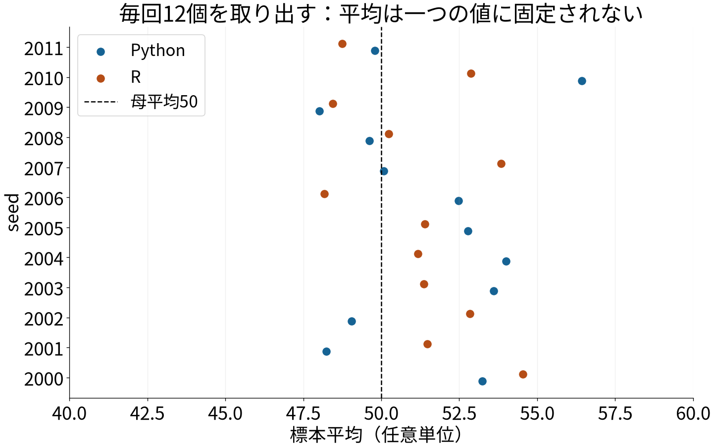
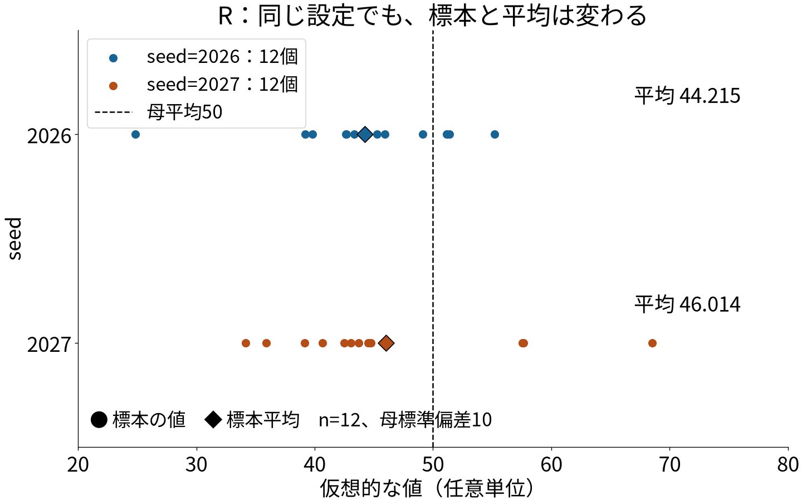
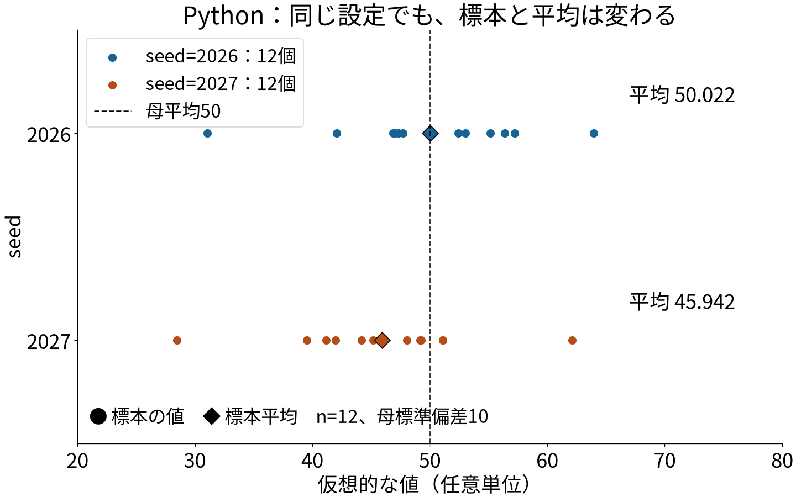
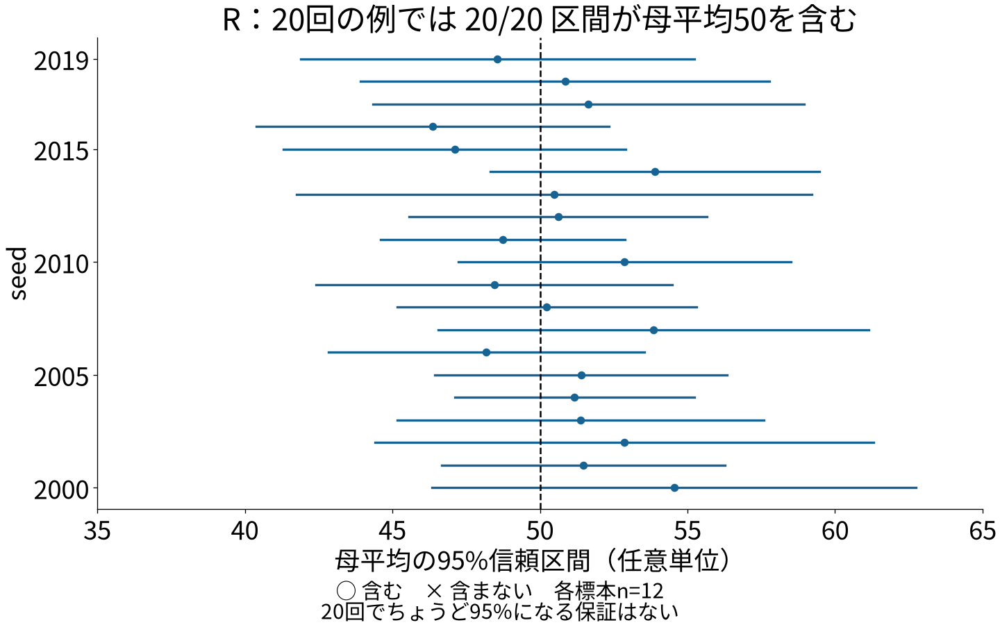

0–5分
DSプログラミング入門2026｜乱数と統計的推測
12個なら、分母はいくつ？
WSL: DSProg2026 と work を確認。exercises/lesson05/lesson05.R を開く。lesson05だけを開き直さない。
5–15分
仮想母集団：平均 50、標準偏差 10
ここから、独立に12個の値を取り出す。
平均は、毎回ちょうど50になるでしょうか。
母集団：推測したい全体
↓ 今回は独立な正規乱数で取り出す
標本：今回得た12個の値
実際の学生の成績・学習時間ではない。
| そろえる | 一致を要求しない |
|---|---|
| 母平均50、母標準偏差10 | 個々の乱数値 |
| 標本サイズ12 | 標本平均の値 |
| 分母n−1、同じ区間の定義 | 区間の端点の値 |
lesson05.R を開き、Ctrl+S。同じファイルを、もう一度最初から実行。
標本が変われば、平均も変わる。
平均の推測に、幅を持たせる。
下限 ───── 標本平均 ───── 上限
標本平均 ± tの臨界値 × 標本標準偏差 / √n
seed=2026、n=12
95%信頼区間：約39.241〜49.190
この一回だけで、計算間違いといえる？
標本を繰り返し取り、同じ方法で区間を作る。
おおむね95%の区間が、真の母平均を含む。
一つの区間に母平均が95%の確率で存在する、 という意味ではない。
lesson05.py を開き、Ctrl+S。
45–65分
seedを2026→2027へ変更する。
exercise05.py / .R へコピー。両言語で行う。実行前に予想を一言。
下限 ├────────────┤ 上限
上限から下限を引く。
width という名前を付ける。「区間幅を出したい。完成コードではなく、 引き算と表示のヒントをください」
検証
65–80分


| seed=2027 | Python | R |
|---|---|---|
| 平均 | 45.942 | 46.014 |
| 標本標準偏差 | 8.141 | 10.106 |
| 下限 | 40.769 | 39.593 |
| 上限 | 51.114 | 52.435 |
| 区間幅 | 10.345 | 12.842 |

80–85分
85–90分
exercise05.py と exercise05.R
を保存。標本平均は変わる。推測には不確かさがある。
次回：型・件数・欠損を確認する「前処理」。
このモデルでは、標本平均の標準偏差は σ/√n。
nが大きいほど、平均のばらつきは一般に小さい。
個別の試行の誤差や区間幅が、 必ず単調に小さくなるわけではない。
出典：学生ノート、教員メモ、実行検証記録。